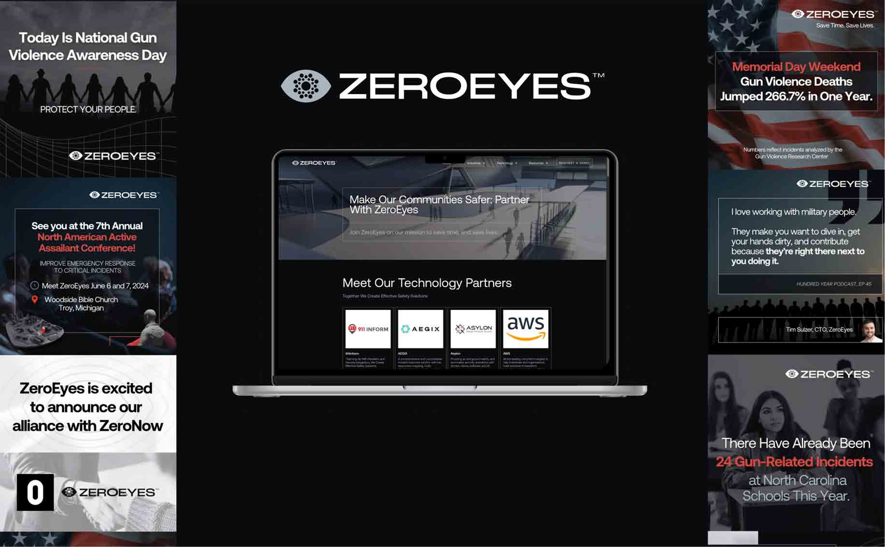
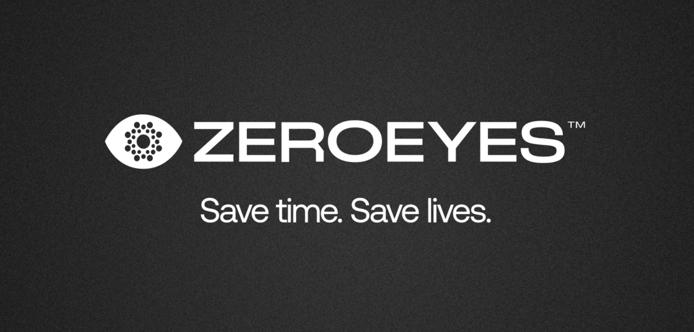
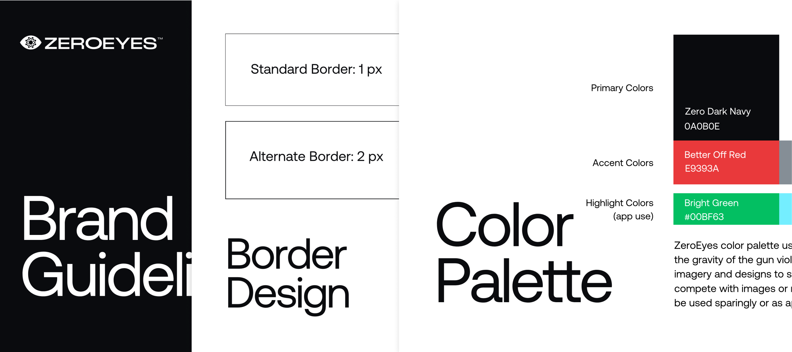
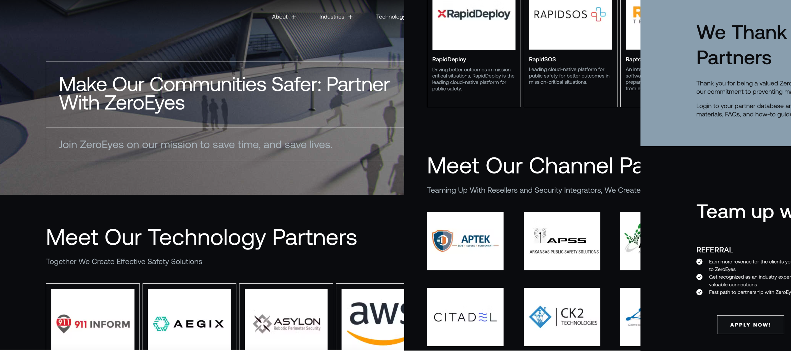
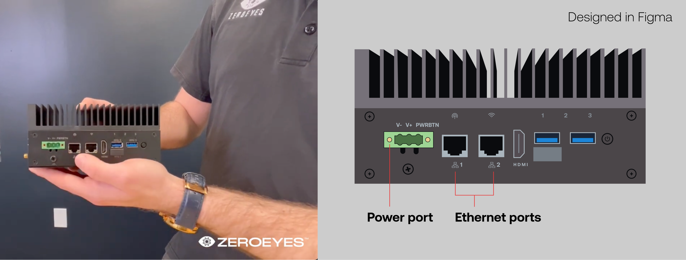
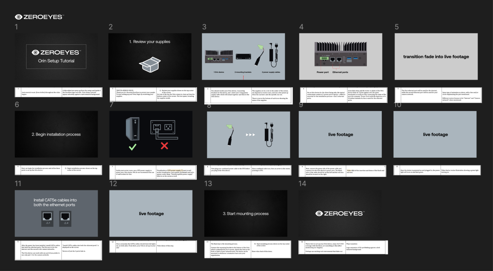

2024Marketing & UX Designs
Overview
During my 11-week internship at ZeroEyes, I was the Marketing Design intern working with the marketing team and partnership team. I used 6 creative programs to work across the areas of UI/UX design, graphic design, motion design and sound design. This resulted in an elevated brand image that drove user acquisition across different channels.
ZeroEyes protects with AI gun detection

As part of a tech company composed of army veterans and others with like-minded ambition, my workload consisted of creating design assets to communicate the brand identity of the company. Different opportunities existed in every corner to practice my design skills and improve the existing branding.
Throughout the internship, as part of the Marketing team I collaborated with the VP of marketing, Director of Content, VP of Partnerships, and Director of Partnerships to deliver impactful designs.
Designing daily for marketing
While working on social media posts, flyers and promotions for their ongoing No Bell podcast, I grew to understand the outward facing personality of ZeroEyes, which provides a cutting edge product and is bold in its communication.
Throughout the design process, asking for feedback, making frequent changes, & organizing and sharing multiple files was par for the course. Overall, I used a variety of softwares from Photoshop and Audition to AfterEffects and WordPress.
Creating an established brand guide

Using Canva, the most used design tool by the team, I created an internal branding guide to be used by the marketing team for reference creating files in the future.
In it, I communicated existing logos, fonts, colors, images, image treatments, graphics and other design expectations for the brand. I was also given the chance to propose alternative fonts, create an icon set, a photo library and new graphics for all marketing materials.
Using Figma, and adhering to feedback from my manager, I created an icon set that was sharp and compact, highlighting the modern aesthetic of ZeroEyes. For the image library, I acquired images online and followed existing guidelines for image treatments to make it easier for the team to have images to pull from in the future.
CollaborationCollaborating with partnership

Wanting to utilize my UI/UX knowledge, I asked my team if I could help them with the existing website. There was an opportunity to create a page showcasing current partnerships, helping other companies learn about ZeroEyes' impact.
Meeting frequently with the partnership and research team, I created wireframes balancing technology needs and the business goals of the project. I would ask, is this information correct, and are there suggestions for the layout? Can this be done and does it make sense to?
As I increased the design in fidelity, and documented partnership information with team members, I got to publish my design using WordPress.
Working with engineers to help customers

I wrapped up the end of my internship by taking an existing product setup tutorial and creating a new video with animated motion graphics, in order to help current and existing clients use the product successfully.

First, I took notes while watching the original video and created a script explaining the visuals and narration I wanted to execute. After showing it to engineers of the device and getting approval, I moved on to storyboarding. Using Figma in this stage, I made iterative changes to the vector graphics based on feedback.
Final animated video tutorial
View Orin Setup TutorialCreated in AfterEffects, the final video is a culmination of live action video, animated motion graphics, music and audio narration—effectively communicating the intended message while also infusing the personality of the brand and leaving an impact on our customers.
What I learned from this project
Throughout this remote internship, all work was completed online. However, at the end of the internship, I was invited to a company barbecue where I had the chance to meet my coworkers in person!
- This experience was eye-opening and made me appreciate the value of in-person interaction with colleagues. While I was able to collaborate in person with another co-op on the team, I now realize I could have taken more initiative in exploring in-office opportunities.
- As someone early in the field, I see the benefits of exchanging ideas and iterating on projects in a shared physical workspace.
Overall, I valued this internship as it allowed me to practice design in a variety of contexts and collaborate across different departments. It brings me joy to solve design challenges in any type of experience!